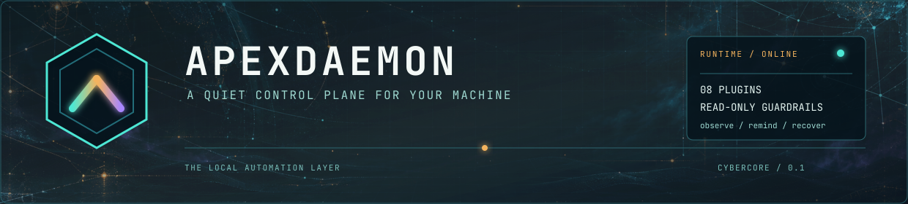
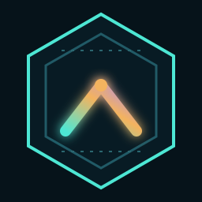
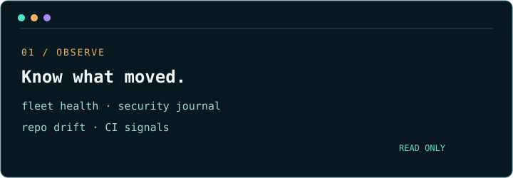
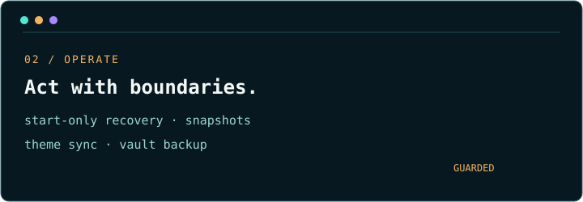
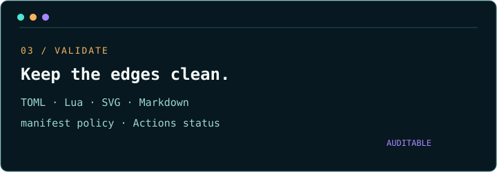

Observe the machine. Automate the boring edges. Keep the guardrails visible.
A plugin-style background automation daemon for service health, dotfiles, repositories, security signals, and local recovery.

Small at the center. Broad at the edges.
ApexDaemon keeps local automation visible. Every area is independently enabled, supervised as a long-running task, and shaped around a clear boundary between observing, reminding, and acting.
One daemon. Three kinds of confidence.



See the edges before enabling the edges.
Verified release archives for Linux and macOS on x86_64 and aarch64.
Local checkpoints copy only explicit manifest-listed files.
theme-sync
Converts the active Omarchy theme into a Cybercore theme file.
fleet-health
Polls TCP, HTTP, and systemd services with start-only recovery.
security
Watches a security unit and its journal without starting it.
vault-backup
Commits a configured vault repo with optional non-interactive push.
repo-housekeeping
Reports dirty, ahead, and behind state across the Cyberfleet.
dotfiles
Audits explicit public/private manifests and scans for high-confidence secrets.
profiles
Confirms machine identity and manifest wiring.
validation
Checks local assets and read-only GitHub Actions status.